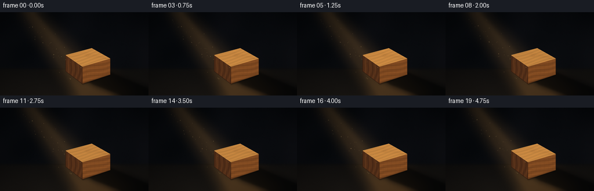
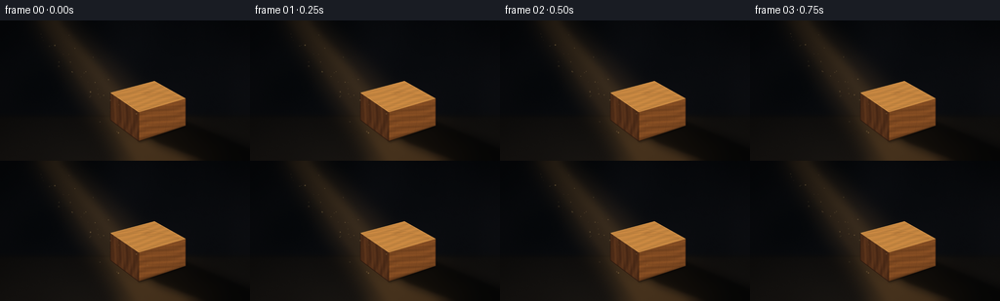
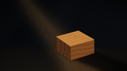

CODING AGENTS AS PIXEL WORLD MODELS
traex/GPT-5.6-Sol · phygen_041
点击播放 · 原生 RGB 像素
逐轮保存的候选
回放视频、检查图与代码变化。
每份候选均可单独播放。实际图片检查记录在下方工具轨迹中。
候选 01播放与检查图
点击播放 · 原生 RGB 像素


展开代码变化
--- 上一保存版本
+++ 本次保存版本
@@ -0,0 +1,207 @@
+from pathlib import Path
+import math
+import numpy as np
+from PIL import Image, ImageDraw, ImageFilter
+import artifact_io
+
+# Deterministic procedural renderer; no external assets.
+W, H, N = 256, 144, 20
+S = 4
+WW, HH = W*S, H*S
+ROOT = Path(__file__).resolve().parent
+
+rng = np.random.default_rng(41041)
+# Fixed fine texture keeps the room tactile without temporal noise.
+noise = rng.normal(0, 1, (HH, WW)).astype(np.float32)
+# Smooth low frequency mottling.
+small = rng.normal(0, 1, (24, 40)).astype(np.float32)
+small_im = Image.fromarray(np.uint8(np.clip((small-small.min())/(small.max()-small.min())*255,0,255)))
+low = np.asarray(small_im.resize((WW, HH), Image.Resampling.BICUBIC).filter(ImageFilter.GaussianBlur(18*S)), dtype=np.float32)
+low = (low - low.mean()) / (low.std() + 1e-6)
+
+yy, xx = np.mgrid[0:HH, 0:WW].astype(np.float32)
+x = xx / S
+y = yy / S
+
+
+def mask_polygon(points, blur=0):
+ im = Image.new('L', (WW, HH), 0)
+ ImageDraw.Draw(im).polygon([(int(a*S), int(b*S)) for a,b in points], fill=255)
+ if blur:
+ im = im.filter(ImageFilter.GaussianBlur(blur*S))
+ return np.asarray(im, dtype=np.float32) / 255.0
+
+
+def add_masked(base, color, alpha):
+ """Alpha-composite a solid color; alpha is an HxW float field."""
+ a = np.clip(alpha, 0, 1)[..., None]
+ return base*(1-a) + np.asarray(color, np.float32)*a
+
+
+def textured_surface(base, points, mean_color, pattern, shade=1.0):
+ m = mask_polygon(points)
+ col = np.asarray(mean_color, np.float32)[None,None,:] * shade
+ tex = pattern[...,None]
+ surf = np.clip(col + tex*np.array([18, 11, 5], np.float32), 0, 255)
+ return base*(1-m[...,None]) + surf*m[...,None]
+
+# Dust particles are seeded once and drift smoothly along the light shaft.
+particles = []
+for i in range(46):
+ py = rng.uniform(7, 119)
+ # Approximate shaft bounds as a function of y.
+ left = 21 + (py+12)/156*107
+ right = 54 + (py+12)/156*161
+ px = rng.uniform(left+3, right-5)
+ r = rng.choice([0.28,0.36,0.45,0.58,0.72], p=[.18,.24,.27,.20,.11])
+ phase = rng.uniform(0, 2*math.pi)
+ speed = rng.uniform(.18,.52)
+ strength = rng.uniform(.25,.9)
+ particles.append((px,py,r,phase,speed,strength))
+
+# Surfaces of the cuboid (coordinates in final pixel units).
+top_poly = [(113,74),(158,62),(190,80),(142,94)]
+left_poly = [(113,74),(142,94),(142,124),(113,102)]
+front_poly = [(142,94),(190,80),(190,108),(142,124)]
+
+frames = []
+for fi in range(N):
+ t = fi / 4.0
+ # Very subtle exposure movement, as from an imperfect distant lamp.
+ pulse = 1.0 + 0.025*math.sin(2*math.pi*t/3.7) + 0.010*math.sin(2*math.pi*t/1.23 + .7)
+
+ # Near-black charcoal wall; slightly warmer near the floor and beam.
+ vertical = np.clip(y/H, 0, 1)
+ bg = np.zeros((HH, WW, 3), np.float32)
+ bg[...,0] = 7.0 + 4.5*vertical + 1.5*low + .9*noise
+ bg[...,1] = 9.0 + 4.0*vertical + 1.3*low + .75*noise
+ bg[...,2] = 12.0 + 4.4*vertical + 1.5*low + .65*noise
+
+ # Floor plane starts near the lower third, readable but still deep in darkness.
+ floor_soft = 1/(1 + np.exp(-(y-97.5)/1.2))
+ floor_col = np.stack([
+ 15 + 8*np.clip((y-97)/47,0,1),
+ 14 + 6*np.clip((y-97)/47,0,1),
+ 13 + 4*np.clip((y-97)/47,0,1)], axis=-1)
+ floor_col += (low*.9 + noise*.85)[...,None]
+ bg = bg*(1-floor_soft[...,None]) + floor_col*floor_soft[...,None]
+
+ # Volumetric diagonal shaft, top-left to lower-right, with feathered boundaries.
+ beam_poly = [(19,-18),(54,-18),(222,148),(126,148)]
+ beam_soft = mask_polygon(beam_poly, blur=8.0)
+ beam_inner = mask_polygon([(30,-12),(49,-12),(195,145),(139,145)], blur=3.2)
+ distance_fade = 0.67 + 0.33*np.clip(y/144,0,1)
+ beam_alpha = (0.21*beam_soft + 0.105*beam_inner) * distance_fade * pulse
+ bg = add_masked(bg, (146,102,53), beam_alpha)
+ # A faint luminous spine makes the light direction unmistakable.
+ core = mask_polygon([(42,-10),(50,-10),(166,128),(151,128)], blur=4.5)
+ bg = add_masked(bg, (210,158,85), core*0.075*pulse)
+
+ # Lit patch on the floor where the beam lands.
+ floor_pool = mask_polygon([(119,97),(177,88),(238,137),(216,148),(130,148)], blur=8)
+ bg = add_masked(bg, (120,78,37), floor_pool*0.18*pulse*floor_soft)
+
+ # Wall/floor seam, kept dim to preserve the dark-room character.
+ seam = np.exp(-((y-98.0)/1.25)**2) * 0.30
+ bg *= (1-seam[...,None]*0.22)
+
+ # Long, coherent cast shadow continuing from the block toward the bottom-right.
+ shadow_points = [(132,111),(177,95),(256,128),(256,144),(204,144),(157,126)]
+ sh_soft = mask_polygon(shadow_points, blur=4.2)
+ sh_core = mask_polygon([(139,111),(178,98),(256,132),(256,144),(211,144),(161,125)], blur=1.2)
+ bg = add_masked(bg, (2,3,4), sh_soft*0.60)
+ bg = add_masked(bg, (1,2,2), sh_core*0.34)
+
+ # Wood grain fields, oriented to the perspective of each face.
+ grain_top = (0.50*np.sin((y*1.18 + x*.33) + 1.8*np.sin(x*.082)) +
+ 0.24*np.sin((y*2.65 + x*.20)+.6) + .13*noise)
+ grain_left = (0.48*np.sin(x*.77 + y*.12 + 1.2*np.sin(y*.17)) +
+ .22*np.sin(x*1.86-y*.11) + .12*noise)
+ grain_front = (0.48*np.sin(y*.72 + x*.20 + 1.5*np.sin(x*.095)) +
+ .24*np.sin(y*1.82+x*.08) + .13*noise)
+
+ # Faces: top receives the ray; side planes naturally fall off in value.
+ bg = textured_surface(bg, left_poly, (92,52,27), grain_left, 0.88)
+ bg = textured_surface(bg, front_poly, (132,76,34), grain_front, 0.95)
+ bg = textured_surface(bg, top_poly, (185,124,59), grain_top, 1.03*pulse)
+
+ # Directional highlight restricted to the upper-left portion of the top face.
+ top_mask = mask_polygon(top_poly)
+ incidence = np.clip(1.10 - ((x-116)*.0052 + (y-65)*.004), .72, 1.08)
+ warm = np.zeros_like(bg)
+ warm[...] = (224,165,82)
+ a = top_mask * 0.115 * incidence * pulse
+ bg = bg*(1-a[...,None]) + warm*a[...,None]
+
+ # Fine wood streaks and construction edges, clipped to faces.
+ detail = Image.new('RGBA', (WW, HH), (0,0,0,0))
+ d = ImageDraw.Draw(detail)
+ def line(points, fill, width=1):
+ d.line([(int(px*S),int(py*S)) for px,py in points], fill=fill, width=max(1,int(width*S)), joint='curve')
+ # top growth lines follow the top-plane perspective
+ for off, al in [(0,68),(5,50),(10,42),(16,34)]:
+ line([(116,75+off*.34),(145,69+off*.47),(183,79+off*.10)], (80,40,15,al), .45)
+ # front-face grain filaments
+ for k in [0,1,2,3,4,5]:
+ px0 = 148 + k*7.2
+ line([(px0,92-k*2.0),(px0+1.5,105-k*.9),(px0-1,121-k*2.0)], (57,29,14,42), .42)
+ # left face darker streaks
+ for k in [0,1,2]:
+ px0 = 119+k*7.4
+ line([(px0,79+k*5.3),(px0+.5,103+k*5.1)], (48,25,14,46), .48)
+ # Perspective edges and thin contact darkening.
+ line(top_poly+[top_poly[0]], (238,179,93,135), .62)
+ line([(113,74),(113,102),(142,124),(190,108),(190,80)], (42,23,14,175), .75)
+ line([(142,94),(142,124)], (50,27,13,150), .75)
+ line([(142,124),(190,108)], (24,15,10,210), .75)
+ detail_arr = np.asarray(detail, dtype=np.float32)
+ da = detail_arr[...,3:4]/255.0
+ bg = bg*(1-da) + detail_arr[...,:3]*da
+
+ # A small elliptical knot on the illuminated top surface, perspectively flattened.
+ knot_layer = Image.new('RGBA', (WW, HH), (0,0,0,0))
+ kd = ImageDraw.Draw(knot_layer)
+ for rr, a0 in [(6.2,33),(4.4,48),(2.7,58)]:
+ box = ((151-rr)*S,(75-rr*.32)*S,(151+rr)*S,(75+rr*.32)*S)
+ kd.ellipse(tuple(map(int,box)), outline=(79,39,15,a0), width=max(1,int(.45*S)))
+ knot = np.asarray(knot_layer,dtype=np.float32)
+ kmask = top_mask[...,None] * (knot[...,3:4]/255.0)
+ bg = bg*(1-kmask) + knot[...,:3]*kmask
+
+ # Contact occlusion at the block's base grounds it on the floor.
+ contact = Image.new('L',(WW,HH),0)
+ cd = ImageDraw.Draw(contact)
+ cd.line([(142*S,124*S),(190*S,108*S)], fill=205, width=2*S)
+ contact = np.asarray(contact.filter(ImageFilter.GaussianBlur(1.2*S)),np.float32)/255
+ bg = add_masked(bg,(2,2,2),contact*.60)
+
+ # Floating dust, visible only because it crosses the light shaft.
+ dust = Image.new('RGBA',(WW,HH),(0,0,0,0))
+ dd = ImageDraw.Draw(dust)
+ for i,(px0,py0,r,phase,speed,strength) in enumerate(particles):
+ # Upward drift and a tiny lateral meander; wrap high particles gently.
+ py = ((py0 - t*speed*2.0 + 8) % 122) - 3
+ px = px0 + 1.25*math.sin(phase+t*(.45+speed))
+ twinkle = .58 + .42*math.sin(phase*1.7+t*(1.0+speed))**2
+ alpha = int(105*strength*twinkle)
+ rr = r*S
+ dd.ellipse((int(px*S-rr),int(py*S-rr),int(px*S+rr),int(py*S+rr)), fill=(255,210,131,alpha))
+ dust = dust.filter(ImageFilter.GaussianBlur(.20*S))
+ du = np.asarray(dust,dtype=np.float32)
+ dua = du[...,3:4]/255.0 * beam_soft[...,None]
+ bg = bg*(1-dua)+du[...,:3]*dua
+
+ # Subtle vignette emphasizes the shaft and central block.
+ dx = (x-137)/150
+ dy = (y-80)/103
+ vig = np.clip(1 - 0.31*np.maximum(0, dx*dx+dy*dy-.22), .67, 1)
+ bg *= vig[...,None]
+
+ # Downsample from 4x for smooth edges and retain true RGB uint8 output.
+ arr = np.uint8(np.clip(bg,0,255))
+ final = Image.fromarray(arr,'RGB').resize((W,H),Image.Resampling.LANCZOS)
+ frames.append(np.asarray(final,dtype=np.uint8))
+
+frames = np.stack(frames,axis=0)
+artifact_io.save(frames, ROOT)
+print(f"saved {frames.shape} {frames.dtype} to {ROOT}")
可观测工具轨迹
实际执行的命令与返回图片。
命令 1exit 0
/bin/bash -lc "cat prompt.txt && printf '\\n--- GENERATION_RULES ---\\n' && cat GENERATION_RULES.md && printf '\\n--- TASK_SPEC ---\\n' && cat task_spec.json"
命令 2exit 0
/bin/bash -lc "find . -maxdepth 2 -type f -printf '%p\\n' | sort && printf '\\n--- tools ---\\n' && command -v ffmpeg || true && command -v python3 || true && command -v blender || true"
命令 3exit 0
/bin/bash -lc "cat artifact_io.py && python3 - <<'PY'
try:
import PIL; print('PIL', PIL.__version__)
except Exception as e: print('no PIL',e)
try:
import numpy; print('numpy', numpy.__version__)
except Exception as e: print('no numpy',e)
PY"命令 4exit 0
/bin/bash -lc "cat > generate.py <<'PY'
from pathlib import Path
import math
import numpy as np
from PIL import Image, ImageDraw, ImageFilter
import artifact_io
# Deterministic procedural renderer; no external assets.
W, H, N = 256, 144, 20
S = 4
WW, HH = W*S, H*S
ROOT = Path(__file__).resolve().parent
rng = np.random.default_rng(41041)
# Fixed fine texture keeps the room tactile without temporal noise.
noise = rng.normal(0, 1, (HH, WW)).astype(np.float32)
# Smooth low frequency mottling.
small = rng.normal(0, 1, (24, 40)).astype(np.float32)
small_im = Image.fromarray(np.uint8(np.clip((small-small.min())/(small.max()-small.min())*255,0,255)))
low = np.asarray(small_im.resize((WW, HH), Image.Resampling.BICUBIC).filter(ImageFilter.GaussianBlur(18*S)), dtype=np.float32)
low = (low - low.mean()) / (low.std() + 1e-6)
yy, xx = np.mgrid[0:HH, 0:WW].astype(np.float32)
x = xx / S
y = yy / S
def mask_polygon(points, blur=0):
im = Image.new('L', (WW, HH), 0)
ImageDraw.Draw(im).polygon([(int(a*S), int(b*S)) for a,b in points], fill=255)
if blur:
im = im.filter(ImageFilter.GaussianBlur(blur*S))
return np.asarray(im, dtype=np.float32) / 255.0
def add_masked(base, color, alpha):
\"\"\"Alpha-composite a solid color; alpha is an HxW float field.\"\"\"
a = np.clip(alpha, 0, 1)[..., None]
return base*(1-a) + np.asarray(color, np.float32)*a
def textured_surface(base, points, mean_color, pattern, shade=1.0):
m = mask_polygon(points)
col = np.asarray(mean_color, np.float32)[None,None,:] * shade
tex = pattern[...,None]
surf = np.clip(col + tex*np.array([18, 11, 5], np.float32), 0, 255)
return base*(1-m[...,None]) + surf*m[...,None]
# Dust particles are seeded once and drift smoothly along the light shaft.
particles = []
for i in range(46):
py = rng.uniform(7, 119)
# Approximate shaft bounds as a function of y.
left = 21 + (py+12)/156*107
right = 54 + (py+12)/156*161
px = rng.uniform(left+3, right-5)
r = rng.choice([0.28,0.36,0.45,0.58,0.72], p=[.18,.24,.27,.20,.11])
phase = rng.uniform(0, 2*math.pi)
speed = rng.uniform(.18,.52)
strength = rng.uniform(.25,.9)
particles.append((px,py,r,phase,speed,strength))
# Surfaces of the cuboid (coordinates in final pixel units).
top_poly = [(113,74),(158,62),(190,80),(142,94)]
left_poly = [(113,74),(142,94),(142,124),(113,102)]
front_poly = [(142,94),(190,80),(190,108),(142,124)]
frames = []
for fi in range(N):
t = fi / 4.0
# Very subtle exposure movement, as from an imperfect distant lamp.
pulse = 1.0 + 0.025*math.sin(2*math.pi*t/3.7) + 0.010*math.sin(2*math.pi*t/1.23 + .7)
# Near-black charcoal wall; slightly warmer near the floor and beam.
vertical = np.clip(y/H, 0, 1)
bg = np.zeros((HH, WW, 3), np.float32)
bg[...,0] = 7.0 + 4.5*vertical + 1.5*low + .9*noise
bg[...,1] = 9.0 + 4.0*vertical + 1.3*low + .75*noise
bg[...,2] = 12.0 + 4.4*vertical + 1.5*low + .65*noise
# Floor plane starts near the lower third, readable but still deep in darkness.
floor_soft = 1/(1 + np.exp(-(y-97.5)/1.2))
floor_col = np.stack([
15 + 8*np.clip((y-97)/47,0,1),
14 + 6*np.clip((y-97)/47,0,1),
13 + 4*np.clip((y-97)/47,0,1)], axis=-1)
floor_col += (low*.9 + noise*.85)[...,None]
bg = bg*(1-floor_soft[...,None]) + floor_col*floor_soft[...,None]
# Volumetric diagonal shaft, top-left to lower-right, with feathered boundaries.
beam_poly = [(19,-18),(54,-18),(222,148),(126,148)]
beam_soft = mask_polygon(beam_poly, blur=8.0)
beam_inner = mask_polygon([(30,-12),(49,-12),(195,145),(139,145)], blur=3.2)
distance_fade = 0.67 + 0.33*np.clip(y/144,0,1)
beam_alpha = (0.21*beam_soft + 0.105*beam_inner) * distance_fade * pulse
bg = add_masked(bg, (146,102,53), beam_alpha)
# A faint luminous spine makes the light direction unmistakable.
core = mask_polygon([(42,-10),(50,-10),(166,128),(151,128)], blur=4.5)
bg = add_masked(bg, (210,158,85), core*0.075*pulse)
# Lit patch on the floor where the beam lands.
floor_pool = mask_polygon([(119,97),(177,88),(238,137),(216,148),(130,148)], blur=8)
bg = add_masked(bg, (120,78,37), floor_pool*0.18*pulse*floor_soft)
# Wall/floor seam, kept dim to preserve the dark-room character.
seam = np.exp(-((y-98.0)/1.25)**2) * 0.30
bg *= (1-seam[...,None]*0.22)
# Long, coherent cast shadow continuing from the block toward the bottom-right.
shadow_points = [(132,111),(177,95),(256,128),(256,144),(204,144),(157,126)]
sh_soft = mask_polygon(shadow_points, blur=4.2)
sh_core = mask_polygon([(139,111),(178,98),(256,132),(256,144),(211,144),(161,125)], blur=1.2)
bg = add_masked(bg, (2,3,4), sh_soft*0.60)
bg = add_masked(bg, (1,2,2), sh_core*0.34)
# Wood grain fields, oriented to the perspective of each face.
grain_top = (0.50*np.sin((y*1.18 + x*.33) + 1.8*np.sin(x*.082)) +
0.24*np.sin((y*2.65 + x*.20)+.6) + .13*noise)
grain_left = (0.48*np.sin(x*.77 + y*.12 + 1.2*np.sin(y*.17)) +
.22*np.sin(x*1.86-y*.11) + .12*noise)
grain_front = (0.48*np.sin(y*.72 + x*.20 + 1.5*np.sin(x*.095)) +
.24*np.sin(y*1.82+x*.08) + .13*noise)
# Faces: top receives the ray; side planes naturally fall off in value.
bg = textured_surface(bg, left_poly, (92,52,27), grain_left, 0.88)
bg = textured_surface(bg, front_poly, (132,76,34), grain_front, 0.95)
bg = textured_surface(bg, top_poly, (185,124,59), grain_top, 1.03*pulse)
# Directional highlight restricted to the upper-left portion of the top face.
top_mask = mask_polygon(top_poly)
incidence = np.clip(1.10 - ((x-116)*.0052 + (y-65)*.004), .72, 1.08)
warm = np.zeros_like(bg)
warm[...] = (224,165,82)
a = top_mask * 0.115 * incidence * pulse
bg = bg*(1-a[...,None]) + warm*a[...,None]
# Fine wood streaks and construction edges, clipped to faces.
detail = Image.new('RGBA', (WW, HH), (0,0,0,0))
d = ImageDraw.Draw(detail)
def line(points, fill, width=1):
d.line([(int(px*S),int(py*S)) for px,py in points], fill=fill, width=max(1,int(width*S)), joint='curve')
# top growth lines follow the top-plane perspective
for off, al in [(0,68),(5,50),(10,42),(16,34)]:
line([(116,75+off*.34),(145,69+off*.47),(183,79+off*.10)], (80,40,15,al), .45)
# front-face grain filaments
for k in [0,1,2,3,4,5]:
px0 = 148 + k*7.2
line([(px0,92-k*2.0),(px0+1.5,105-k*.9),(px0-1,121-k*2.0)], (57,29,14,42), .42)
# left face darker streaks
for k in [0,1,2]:
px0 = 119+k*7.4
line([(px0,79+k*5.3),(px0+.5,103+k*5.1)], (48,25,14,46), .48)
# Perspective edges and thin contact darkening.
line(top_poly+[top_poly[0]], (238,179,93,135), .62)
line([(113,74),(113,102),(142,124),(190,108),(190,80)], (42,23,14,175), .75)
line([(142,94),(142,124)], (50,27,13,150), .75)
line([(142,124),(190,108)], (24,15,10,210), .75)
detail_arr = np.asarray(detail, dtype=np.float32)
da = detail_arr[...,3:4]/255.0
bg = bg*(1-da) + detail_arr[...,:3]*da
# A small elliptical knot on the illuminated top surface, perspectively flattened.
knot_layer = Image.new('RGBA', (WW, HH), (0,0,0,0))
kd = ImageDraw.Draw(knot_layer)
for rr, a0 in [(6.2,33),(4.4,48),(2.7,58)]:
box = ((151-rr)*S,(75-rr*.32)*S,(151+rr)*S,(75+rr*.32)*S)
kd.ellipse(tuple(map(int,box)), outline=(79,39,15,a0), width=max(1,int(.45*S)))
knot = np.asarray(knot_layer,dtype=np.float32)
kmask = top_mask[...,None] * (knot[...,3:4]/255.0)
bg = bg*(1-kmask) + knot[...,:3]*kmask
# Contact occlusion at the block's base grounds it on the floor.
contact = Image.new('L',(WW,HH),0)
cd = ImageDraw.Draw(contact)
cd.line([(142*S,124*S),(190*S,108*S)], fill=205, width=2*S)
contact = np.asarray(contact.filter(ImageFilter.GaussianBlur(1.2*S)),np.float32)/255
bg = add_masked(bg,(2,2,2),contact*.60)
# Floating dust, visible only because it crosses the light shaft.
dust = Image.new('RGBA',(WW,HH),(0,0,0,0))
dd = ImageDraw.Draw(dust)
for i,(px0,py0,r,phase,speed,strength) in enumerate(particles):
# Upward drift and a tiny lateral meander; wrap high particles gently.
py = ((py0 - t*speed*2.0 + 8) % 122) - 3
px = px0 + 1.25*math.sin(phase+t*(.45+speed))
twinkle = .58 + .42*math.sin(phase*1.7+t*(1.0+speed))**2
alpha = int(105*strength*twinkle)
rr = r*S
dd.ellipse((int(px*S-rr),int(py*S-rr),int(px*S+rr),int(py*S+rr)), fill=(255,210,131,alpha))
dust = dust.filter(ImageFilter.GaussianBlur(.20*S))
du = np.asarray(dust,dtype=np.float32)
dua = du[...,3:4]/255.0 * beam_soft[...,None]
bg = bg*(1-dua)+du[...,:3]*dua
# Subtle vignette emphasizes the shaft and central block.
dx = (x-137)/150
dy = (y-80)/103
vig = np.clip(1 - 0.31*np.maximum(0, dx*dx+dy*dy-.22), .67, 1)
bg *= vig[...,None]
# Downsample from 4x for smooth edges and retain true RGB uint8 output.
arr = np.uint8(np.clip(bg,0,255))
final = Image.fromarray(arr,'RGB').resize((W,H),Image.Resampling.LANCZOS)
frames.append(np.asarray(final,dtype=np.uint8))
frames = np.stack(frames,axis=0)
artifact_io.save(frames, ROOT)
print(f\"saved {frames.shape} {frames.dtype} to {ROOT}\")
PY
python3 generate.py"命令 5exit 0
/bin/bash -lc "python3 - <<'PY'
from pathlib import Path
import numpy as np
from PIL import Image
p=Path('.')
z=np.load('pixels.npz')['pixels']
ims=np.stack([np.array(Image.open(f).convert('RGB')) for f in sorted((p/'frames').glob('*.png'))])
print('frames',ims.shape,ims.dtype,'range',ims.min(),ims.max())
print('npz',z.shape,z.dtype)
print('mean luminance',np.round(ims.mean((1,2,3)),2).tolist())
print('changed px consecutive', [int(np.any(ims[i]"'!=ims[i-1],2).sum()) for i in range(1,len(ims))])
print('"'files', [(f.name,f.stat().st_size) for f in [p/'pixels.npz',p/'index.html',p/'inspection.png']])
PY"视觉工具实际返回图片 1

视觉工具实际返回图片 2

保存候选 1 份；完成命令 5 次；可验证图片返回 2 张。原始 API 响应与完整日志保留在本地。